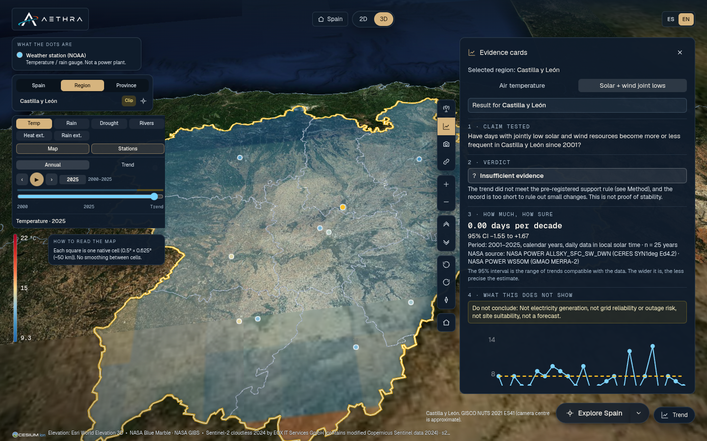
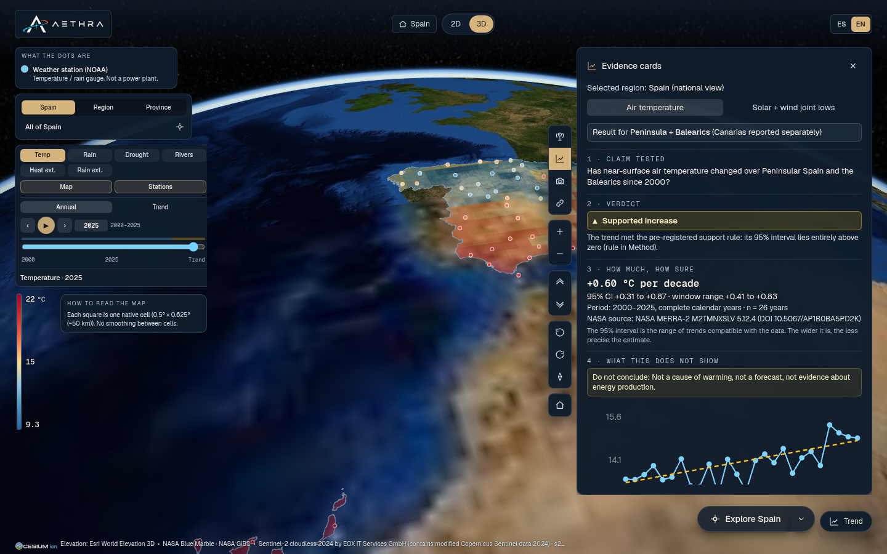
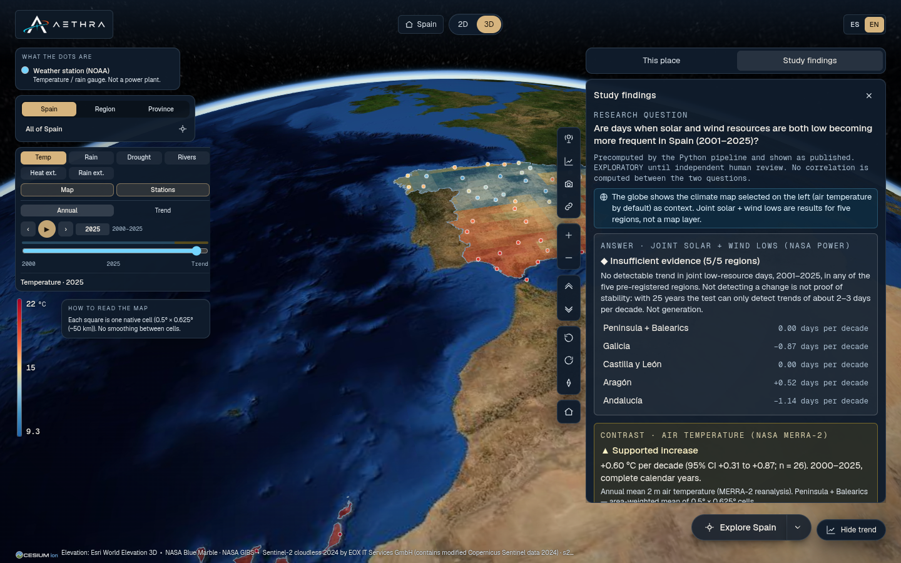

NASA Space Apps 2026 · Be An Earth System Trend Detective!
AETHRA turns NASA Earth data into defensible discoveries.
Independent Space Apps project · not an official NASA product
The question
A regional renewable-energy resource analyst in Spain, before an assumption enters a long-term study.
Averages hide timing. A day when both resources are low is the hard case. It is a resource indicator, not grid reliability.
Treat “joint lows are increasing” as a supported finding, or keep it as an unconfirmed hypothesis.
The NASA investigation
Claim A · the result
0.00 days per decade · Castilla y León
95% CI −1.55 to +1.67 · n = 25 years · 5/5 regions insufficient evidence
| Region (all: Insufficient evidence) | days/decade | 95% CI |
|---|---|---|
| Peninsula + Balearics | 0.00 | −1.85 to +2.16 |
| Galicia | −0.87 | −2.92 to +1.33 |
| Castilla y León | 0.00 | −1.55 to +1.67 |
| Aragón | +0.52 | −1.88 to +2.50 |
| Andalucía | −1.14 | −3.33 to +0.75 |
Not detecting a change is not proof of stability: the test could only detect about 2 days per decade.

Claim B · the contrast
+0.60 °C per decade · Peninsula + Balearics
95% CI +0.31 to +0.87 · 2000–2025, complete calendar years · NASA MERRA-2 T2M
External station comparison: all 64 NOAA stations show a positive trend, 57 significant (not claimed independent of MERRA-2).
Not a cause of warming, not a forecast, not evidence about energy production. EXPLORATORY until independent human review.

The product

Statistics run in tested Python; the browser only displays them.
What this means for research decisions
| A | “Joint lows are becoming more frequent in Castilla y León.” | ? Insufficient evidence: keep it a hypothesis |
| B | “Air temperature is increasing over the Peninsula and Balearics.” | ▲ Supported increase |
| C | “So this hybrid plant will be less profitable in 2040.” | ⊘ Outside the evidence: no estimate given |
Next study: observed generation or station wind, longer record. Not a construction or investment decision.
We don't tell you what you want to hear.
We show you what NASA's evidence supports.
Data: NASA POWER (CERES SYN1deg, MERRA-2), NASA MERRA-2 (doi:10.5067/AP1B0BA5PD2K), NOAA GHCN-Daily, Eurostat GISCO. Globe: Cesium, NASA GIBS, Esri, EOX. AI use: Claude (Claude Code) assisted code and docs; statistics come from tested Python. Results EXPLORATORY until independent review.